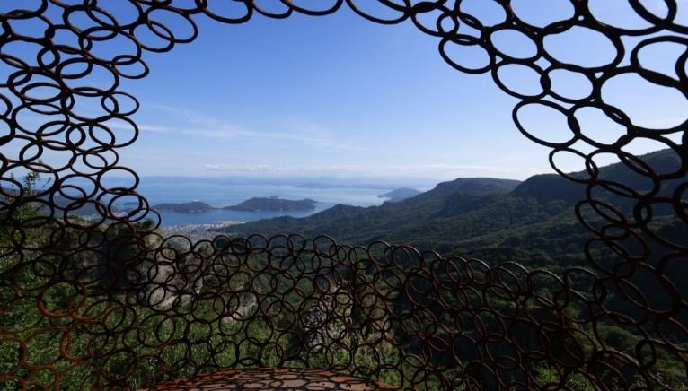

Festivals · Arts
Setouchi Triennale 2028
- Dates
- –
- Venue
- 17 areas on Seto Inland Sea islands and coasts (Naoshima, Teshima, Takamatsu Port and others)
- Location
- Takamatsu, Japan
- Format
- In-person
- Category
- Arts
- Industry
- Contemporary art / islands
- Organiser
- Setouchi Triennale Executive Committee
- Expected attendance
- 1,000,000
- Official website
- https://setouchi-artfest.mom/about/
About
Three sessions: spring 14 Apr - 28 May, summer 25 Jul - 20 Aug, autumn 29 Sep - 12 Nov 2028 (117 days). Dates are local to the host city (Japan Standard Time, UTC+9).
Topics: contemporary art, islands, triennale.
Official Setouchi Triennale site: 'one of Japan's largest international art festivals, attracting about one million people from Japan and overseas' (organiser's per-edition description).